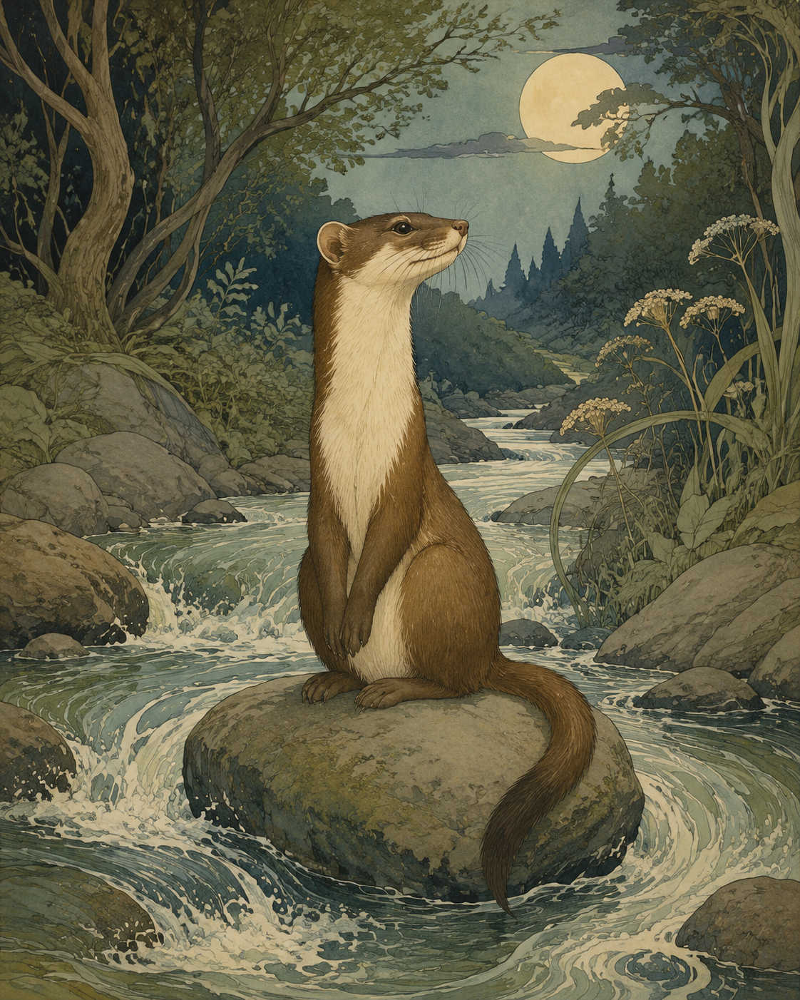

Ein Wiesel / saß auf einem Kiesel / inmitten Bachgeriesel.
前三行是一个三叠韵（-iesel）：Wiesel（鼬）/ Kiesel（卵石）/ Bachgeriesel（淙淙溪水）。鼬坐在卵石上、卵石在溪水中——三个词都以 -iesel 收尾，层层套叠。
美学的鼬
《Galgenlieder》（1905）· 语言游戏
世纪末 / 幽默诗（Nonsense-Lyrik）
1905年收入《Galgenlieder》（Bruno Cassirer, Berlin 1905, S.36）

图片由 AI 生成
Ein Wiesel / saß auf einem Kiesel / inmitten Bachgeriesel.
前三行是一个三叠韵（-iesel）：Wiesel（鼬）/ Kiesel（卵石）/ Bachgeriesel（淙淙溪水）。鼬坐在卵石上、卵石在溪水中——三个词都以 -iesel 收尾，层层套叠。
Das raffinier- / te Tier
★全诗的机关：raffinierte（狡黠的）一词被强行拆到两行（raffinier- / te Tier），使得 raffinier- 与 Tier 押韵（-ier）。词被拆开，不为别的，只为押韵——这正是全诗的笑点。
tat's um des Reimes willen.
um des Reimes willen = "为了押韵的缘故"。鼬之所以坐在那块石头上，不是出于任何现实理由，而是"为了押韵"——诗把自己的形式条件（押韵）写进了内容。这是"元诗"（诗关于诗本身）的幽默样本。um … willen + 第二格（des Reimes）。
本诗中未标注需要特别说明的不规则动词变位。
全诗 11 行，韵式 aaa / bc / cbd / bbd
Ein Wiesel / saß auf einem Kiesel / inmitten Bachgeriesel. … Das raffinier- / te Tier / tat's um des Reimes willen.
um des Reimes willen（第11行）
克里斯蒂安·摩根施特恩（1871—1914）是德语幽默诗与无厘头诗（Nonsense-Lyrik）的代表。他的《绞刑架之歌》（Galgenlieder, 1905）创造了一个荒诞的"绞刑架世界"：其中的事物（鼬、卵石、月牛）都按语言自身的逻辑（押韵、构词、谐音）而非现实逻辑行动。
《美学的鼬》是其中最常被引用的一首。它的笑点完全形式化：鼬坐在卵石上，不是出于任何自然理由，而是"为了押韵"——因为 Wiesel、Kiesel、Bachgeriesel 押韵，所以鼬"必须"坐在那块石头上。诗把押韵这一形式规则反转为内容的起因，是对"为艺术而艺术"（l'art pour l'art）的温和戏仿（故题"美学的"）。
本诗与本站《狼人》（编号29）是《绞刑架之歌》的一对：《狼人》戏仿变格，《鼬》戏仿押韵——两首都把德语语法/诗学的形式规则写成荒诞剧。
中文译文为本站学习译文（AI 辅助），采用直译。说明：(1) -iesel 三叠韵（Wiesel/Kiesel/Bachgeriesel）在中文无法复制，译文据义直译；(2) raffinier-/te Tier 的跨行押韵机关：译文作"狡-/黠的动物"，以破折号近似传达"词被拆开以押韵"，但中文无法真正复制 raffinier/Tier 的 -ier 韵；(3) um des Reimes willen 译"为了押韵"，并在注释中说明其框式结构。本诗短小（11行），但笑点全在形式，属"短 ≠ 易"。
【标题拼法】历史印刷题作"Das aesthetische Wiesel"（ae 连写/有时作 æ 合字，1905/1932 Cassirer 版）；现代通行本作"Das ästhetische Wiesel"（变音符）。本站标题从现代拼法 ästhetische（与 slug 一致），历史 ae 形态在此备案。
【三源核对】正文以 German Wikisource 转写的1932年 Cassirer 版影印再版（Diogenes 1981，S.36）为底本，另以两个独立来源核对：planetlyrik（Frankfurter Anthologie 注解）、zgedichte.de。4 块、行数 3/2/3/3（共11行）——用词一致，差异仅在正字法（ae/ä、Wißt/Wisst、im Stillen/im stillen、tat's/tat′s/tats）。
【正字法差异】(1) 题名：aesthetische（Wikisource 1932）vs ästhetische（现代）。(2) Wißt ihr（1932，ß）vs Wisst ihr（1996年后）。(3) im Stillen（大写，Wikisource/zgedichte）vs im stillen（小写，planetlyrik）。(4) tat's（直撇，Wikisource）vs tat′s（曲撇，zgedichte）vs tats（无撇，planetlyrik）。本站从1932 Cassirer 读法（Wißt、im Stillen、tat's），题名用现代 ästhetische。
【待进一步核实】(1) 1905年初版的逐页形态（本次直接核到的是1932 Cassirer / 1981 Diogenes 影印本，非1905初版）；(2) 跨行 raffinier-/te Tier 的确切排印（连字符位置）。
【公版】摩根施特恩1914年卒，公版起始年 = 1914 + 71 = 1985。
本诗现满足规则 A（≥3 来源）、B（≥3 独立运营方：wikimedia / planetlyrik / possel）、D（含一级来源：1932 Cassirer 影印本扫描）。